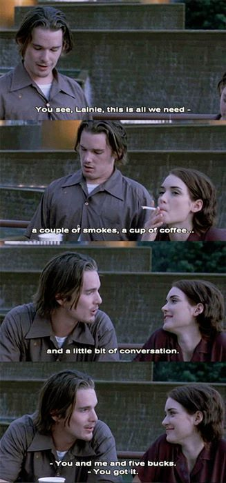

Why the film remains unforgettable long after its fashion,
soundtrack, and supposedly defining decade have faded.
By Gee8 min readThe Journal

To call Reality Bites a '90s classic is true, but it is
also profoundly unfair. It reduces the film to its wardrobe and
soundtrack while overlooking what truly makes it remarkable. It is
a time capsule—but not because it preserves the aesthetics of an
era. It preserves a way of feeling.
Every time I watch it, I'm transported back to a strangely familiar
emotional landscape where friendships felt effortless,
conversations wandered without urgency, and life itself was slower,
messier, and infinitely more authentic. There is a comforting
familiarity to it all, as though I am revisiting a place I've never
actually been, yet somehow remember.
It's easy to dismiss it as “just another '90s film,” but that would
be missing everything that makes it extraordinary. Watching
Reality Bites doesn't feel like watching a story unfold. It
feels like spending two hours with people who somehow existed before
the cameras started rolling and continued living after they stopped.
The interactions are so startlingly natural that you stop seeing
performances altogether. You don't observe the characters; you
simply settle into their world. Before long, their apartment feels
familiar, their conversations feel lived in, and you almost forget
you're watching fiction.
✦
Even the comedic moments carry surprising emotional weight. They're
witty without trying too hard, poetic without sounding pretentious,
and every line feels deliberate. The humour never exists merely to
make you laugh. It reveals character, exposes vulnerability, and
often says more than the dramatic scenes themselves.
The film trusts its audience enough to understand that people often
hide their deepest truths behind their funniest remarks.
And then there's Troy and Lelaina.
From the very first scene, the romantic tension between them is
impossible to ignore. It's not hidden, yet it is never openly
acknowledged. It's like staring at a blazing fire in broad
daylight—the flames are there, burning intensely, but the sunlight
tricks you into believing they're dimmer than they really are.
That tension never disappears. It simply changes shape. Sometimes it
hides behind jokes. Sometimes behind irritation. Sometimes behind
conversations that seem to be about someone else or something else
entirely. Every interaction feels charged by emotions neither of
them is willing—or perhaps able—to articulate.
What fascinates me most is how much of this film unfolds beneath the
dialogue itself.
People rarely confront what they truly feel. They circle around it,
retreat from it, disguise it with sarcasm, intellectual debates, or
perfectly timed humour. The conversations become emotional
battlegrounds where affection masquerades as annoyance, fear
disguises itself as indifference, and longing is constantly
interrupted before it has the chance to become confession.
What remains unsaid often shapes a conversation far more than the
words that are spoken.
As a linguist, I find this endlessly compelling because the film
understands a simple truth about human communication: language is
never limited to what is explicitly stated. Meaning also lives in
hesitation, avoidance, timing, implication, and everything two
people seem determined not to admit.
There is also something quietly surreal about
Reality Bites. Not because anything impossible happens, but
because ordinary moments are infused with an almost dreamlike
intensity. A conversation in a car, an argument in a living room,
friends dancing in a convenience store—everything feels slightly
larger than life without ever breaking its authenticity.
The film constantly moves between melancholy and humour, between
stillness and chaos, creating an emotional landscape that feels less
like reality itself and more like the way reality is remembered.
✦
Perhaps that's why Reality Bites has never really aged.
Strip away the fashion, the cassette tapes, and the MTV aesthetic,
and what remains is astonishingly contemporary. Young adults are
still trying to reconcile ambition with authenticity, love with
pride, connection with independence, and ideals with survival.
The scenery has changed. The emotional landscape hasn't.
For me, Reality Bites is unforgettable because it
succeeds on two fronts that rarely coexist. It is steeped in
nostalgia, not merely for the 1990s, but for a slower, quieter way
of existing—for friendships that unfolded without algorithms,
conversations that wandered without purpose, and emotions that
were allowed to linger unresolved.
At the same time, it possesses a remarkable emotional integrity.
It refuses easy resolutions, neat character arcs, or convenient
declarations of love. It understands that people are often
contradictory, that timing can matter more than intention, and
that the most meaningful relationships are rarely built on
perfect communication.
That honesty is what gives the film its lasting power. Long after
the final scene, you don't remember individual quotes or plot
points nearly as much as you remember how it felt to inhabit its
world.